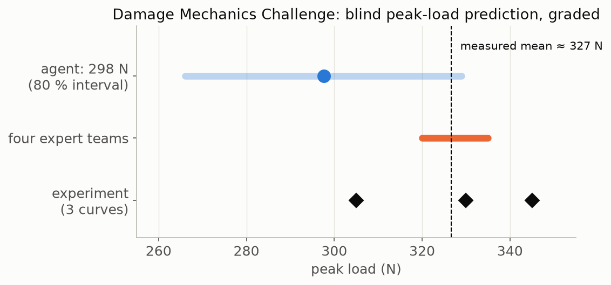
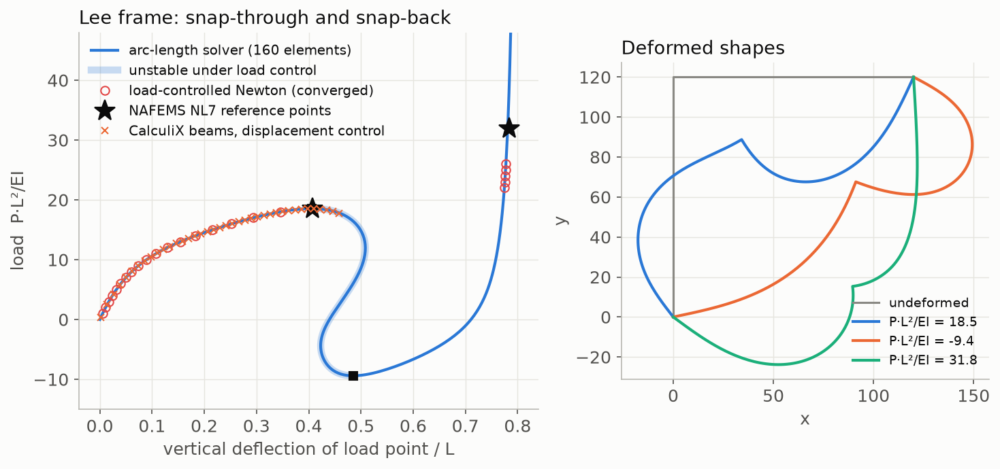
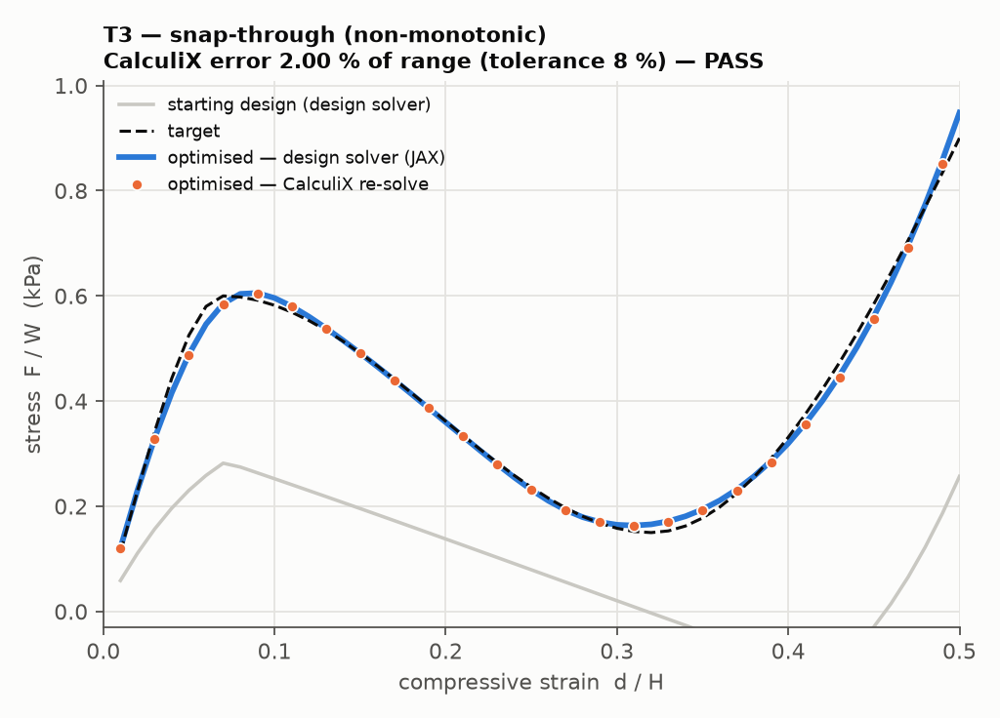
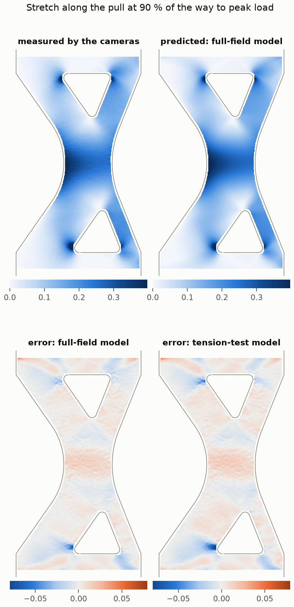
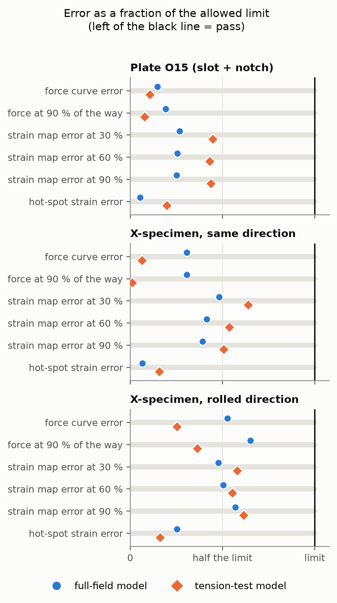

Phase 2 — six hard problems
14–15 November 2026 · instability, fracture, inverse design, contact, material identification
Phase 1 showed an AI agent can run routine structural simulations. Phase 2 asks whether it can handle problems where simulations usually go wrong: structures that snap and buckle, materials that crack, parts that press and rub, designing through a snap, and learning a material from camera data. Each trial ran on its own, set its pass marks before running, and was graded against published references, a second independent solver, or a real experiment.
Short version: on problems with a known answer the agent is usually right, and its misses are recorded. On the two real experiments it predicted blind, it was 9 % low on one and wrong about what breaks first on the other. When the easy inverse-design pass was pushed harder, most of it did not hold up.
Scorecard
| Trial | What was tested | Result | Graded against |
|---|---|---|---|
| 7 · Instability | Snap-through, rubber wrinkling threshold, dented-cylinder buckling | 10 of 12 limit loads within 0.02 %, wrinkling to 7 digits | NAFEMS benchmark, theory, CalculiX |
| 8 · Fracture | Crack growth in a notched plate | 12 of 12 peak loads within 1–7 % | Four published papers |
| Blind: how a 3D-printed beam breaks | mixed peak load 9 % low; crack path and failure mode right | Real experiment | |
| 9 · Inverse design | Shape a rubber beam to three target curves and a two-position switch | 6 of 6 designs; solver validation 4 of 6 | CalculiX re-solve, textbook formulas |
| 10 · Contact | Pressing without friction | 15 of 16 within 1–3 % of theory | Hertz formulas, two solvers |
| Friction: partial slip, sliding die | 4 of 11 own solver right on partial slip; CalculiX gave no result in the planned settings | Exact solution, published band | |
| Blind: when a bolted joint loses its screws in a drop test | missed first break predicted five tests early; missed that the rod cracks | Real experiment | |
| 11 · Identification | Learn steel's plasticity from camera strain maps, predict unseen shapes | 12 of 12 force within 3 %, strain maps within 9 % | Held-out real specimens, CalculiX |
| 12 · Inverse design, hard | Harder target curves | 0 of 2 missed; the impossible target correctly reported as impossible | CalculiX re-solve |
| Designs that tolerate manufacturing error | no gain 58 % of imperfect copies pass, same as before | CalculiX on 24 copies | |
| Automatic fix for the optimiser stalling at a snap | 1 of 11 starts (bar was 8) | Yesterday's stalled starts |
The two blind predictions


Trial 7 — snapping and buckling


Trial 8 — cracking

Trials 9 and 12 — designing through a snap


Trial 10 — pressing and rubbing

Trial 11 — learning a material from camera data


What went wrong, and what caught it
| A converged wrong answer | The first wrinkling calculation settled on 0.322 across three meshes; the right value is 0.456. A count of unstable modes exposed a numerical artefact. |
| Right inside a published range, still wrong | A coarse CalculiX friction run landed inside the published band while being about 30 % above CalculiX's own refined results. |
| The second solver was the wrong one | CalculiX stepped over the cylinder's buckling point, reported a contact pressure 56 % high at a symmetry axis, and did not finish the friction problems in the planned settings. |
| A model missing the real failure | The bolted-joint model could break screws but not crack the rod, so it broke the screws too early. A national-lab team's blind 3D model was early by about the same amount. |
| Blind beam prediction too low | One fracture-energy value fitted to four calibration beams left errors of −9 % to +8 % on those beams; the unseen beam came out 9 % low. |
| A pass that did not survive a harder look | Trial 9's designs passed in two solvers that shared the same simplifications. With a real depth or a flexible frame, the plateau design and both switch designs fall outside tolerance. |
| A wrong diagnosis, corrected | Trial 9 blamed the stalled optimiser on a snap that moves. Trial 12 showed the design sits exactly where the structure can buckle either way, so no gradient exists there. The automatic fix worked from 1 of 11 starts. |
| Extra data that added little | Camera strain maps improved strain predictions but not force predictions over a plain tension test, and the pass marks were loose enough that both models passed everything. |
Limits on these results
- Both blind outcomes come from published reports, not raw data: the beam values are read off figures by eye (about ±10 N), and the bolted-joint outcome from one team's report with no per-test table. The full data sets sit behind a login.
- The planned steel fracture challenge could not be run for the same reason; the beam challenge that replaced it is an easier exam.
- The cylinder result depends on the modelled length; a four times longer section lands just outside tolerance.
- The harder design targets missed with the optimiser out of budget, so they do not show the beam cannot reach them.
- Material identification used slow tests only and stops before peak load; failure was not predicted.
- Nothing was built or tested physically.
Next
- With a Globus account: the steel fracture challenge as planned, and re-grading both blind predictions on the raw data.
- Re-do the bolted joint with a model in which the rod can crack.
- Design with a flexible frame and real depth in the loop, since that is where the designs failed.
- Tighter pass marks for material identification, and prediction through peak load.